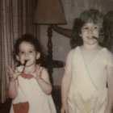
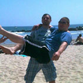
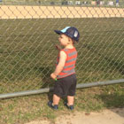

Team Riggio
| 
|
|
Elizabeth Riggio
Matron of Honor
|
Elizabeth met Ally on a beautiful spring day in 1985. Ally doesn’t remember the encounter, but Elizabeth will probably tell you it’s the day her life changed forever. As most older siblings will agree, she finally had a Luigi to her Mario, a Tails to her Sonic, someone to boss around, and someone to sleep in the twin bed closest to the bedroom door because “if a kidnapper comes in, they’ll get you first.” But most importantly, Elizabeth has been Ally’s closest friend and biggest supporter, without whom Ally would surely be lost. Also of note: Both girls have given up pipe-smoking.
Jessie met Ally when John decided it was probably about time to “meet the family.” Jessie was in graduate school at the time, and working, and coaching volleyball, and basically taking over the world. Jessie is the elder sister in the Tompkins crew, but she and younger sister Megan quickly became the little sisters that Momma and Poppa Riggio never gave Ally. As a pseudo big sister, Ally loves sharing worldly advice (read: stories/lessons from her poor life choices) with the Tompkins girls.
Megan met Ally around the same time as Jessie, as you might have deduced. The baby of the Tompkins family, Megan is often tasked with explaining pop culture to everyone and teaching Ally how to use Instagram and Snapchat. While her love of cats is insurmountable, her cool factor was blown out of the water when she was featured on a billboard for her collegiate athleticism. (See photo)
Amy met Ally sometime in kindergarten, or maybe it was pre-school? Let’s just call it the late-80s. Through countless years of friendship and mischief that we are not at liberty to talk about, the two have learned to balance one another in the best ways. This is evidenced by the fact that most conversations end with “Amy, that’s a terrible idea,” or “Wow, Ally, you’re supposed to be my smart friend.” Long story short: The two have developed the sort of decades-long friendship that produces approximately three photos that are appropriate to post here—which says a lot considering all of these photos are deliberately ridiculous.
Sara met Ally sometime in 2001 while working at Delia’s, that clothing retailer that cluttered your mailbox with catalogs and, frankly, nobody knew had an actual store in Woodfield Mall. The two soon jumped ship to work at the Gap, where a post-work car accident and subsequent traumatizing trip to traffic court sealed the fate on their friendship forever. Despite popular belief at the time that “relationships based on intense experiences never work” (Keanu Reeves, Speed) Sara and Ally prevailed through three apartments, countless roommates, an adopted cat, and fifteen years of friendship (and counting).
Amanda met Ally in one of Ally’s first classes at Columbia College in 2005, and the two quickly became friends working (and drinking … OK mostly drinking) together on the school paper. They share a shameful love of Disney programming, cats, and old books (Ally because she likes to make her bookshelves look intellectual; Amanda because she actually IS intellectual). Oh, and without Amanda and her husband Matt, Ally and John would never have met! Thanks, guys.
Kelli met Ally sometime in 2008, where a mutual love of cheese, Michael Jackson, day-drinking and Frankie Valli made them fast friends. To date, Kelli far surpasses all of Ally’s family, friends, and even John in number of travel hours logged together, which might explain why she was ready to stab Ally on their 2012 trip to Australia. Just kidding, this photo was staged. OR WAS IT?! No, it was. We promise Kelli isn’t dangerous.
|
Team Tompkins
| 
|
|
Tony Tompkins
Man of Honor
|
Tony met John in the spring of 1987, when John’s reign as the only child came to a screeching halt. When the shock wore off, John quickly realized that as a smaller, less talkative human, Tony could be a real asset to his mischief. Aside from being the Scorpion to John’s Sub Zero and the Raphael to John’s Michelangelo, Tony was also the test subject every time John said “I wonder what would happen if…” —like that time John wondered how far he could launch Tony and earned baby brother a broken collar bone. The two partake in much less dangerous activities now, like kayaking, talking sports, and enjoying good beer.
Jon met John in a middle school gym in 1998, where Jon introduced John to the then-emerging audio technology known as the mini-disc player. From there on out, the two shared a self-proclaimed nerdy love for building computers and playing video games. Lucky for them, someone actually pays them to do that kind of stuff now. Jon and John work together at a software company downtown—a significant geographic and aesthetic upgrade from the middle school gym.
Bryan met John sometime in 1985, whenever it is that cousins generally meet their brand new baby cousins. From sharing an apartment in their twenties to living in separate states in their thirties, Bryan has always been like an older brother to John. He introduced John to bands like the Smashing Pumpkins, influenced his decision to learn the guitar, advised him on a laundry list of car troubles, and teased him relentlessly about buying a PT Cruiser—as any big brother should.
Matt met John in the fall of 2011 during a softball league held at the UIC fields. John was just a ringer at the time, but found his way into a permanent position on Matt’s team. Matt quickly adopted the then-suburbanite into his city lifestyle, introducing John to new restaurants, new people, and friendly games of flag football that result in torn ACLs. The two share more than just a love of softball, and at any given moment can be found biking, playing almost any competitive sport, or going on serious camping trips out West (the kind where you have to hide your food from predators and wear the same underpants for six days). Matt and his wife, Amanda (see Ally’s crew), are the reason John met Ally back in 2012.
Chuck met John on the morning of Super Bowl XLVII in 2013. It was a historic day, not just because Jim and John Harbaugh became the first two brothers to coach against one another in the Super Bowl, but because Chuck finally met the kind of man he had been looking for in a future brother-in-law. John’s dashing good looks, coupled with both his guitar-playing and pizza-eating abilities made him a perfect match for Chuck in the wild ride we call “Marrying a Riggio.”
Liam is the adorable son of Elizabeth and Chuck. He has basically known Ally and John his whole life, and can’t imagine a world where he’s more than a Facetime call away from his bestie John. He’s less than thrilled to be a ring bearer in the wedding, but to be fair, he really has no idea what it means.
| 
|
|
Henry Hannah
Ring Bearer
|
Henry is the handsome second child of Elizabeth and Chuck. He’s definitely known Ally and John his whole life, and, thankfully, is still too young to recognize that John is a lot cooler than his Aunty Ally. He doesn’t have much of an opinion on being a ring bearer, mostly because he can’t talk.
|